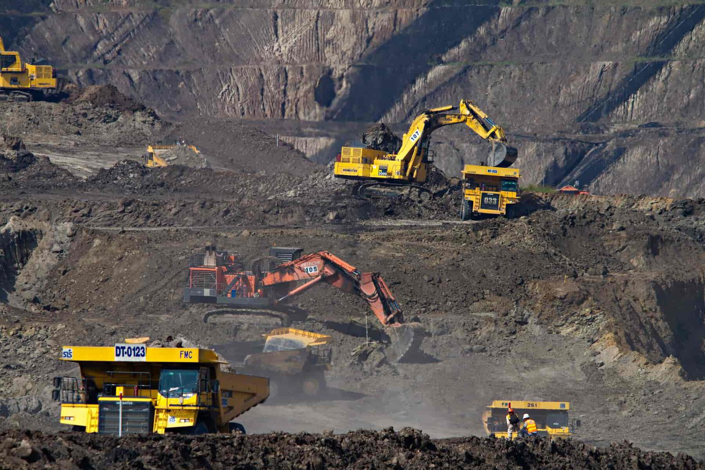
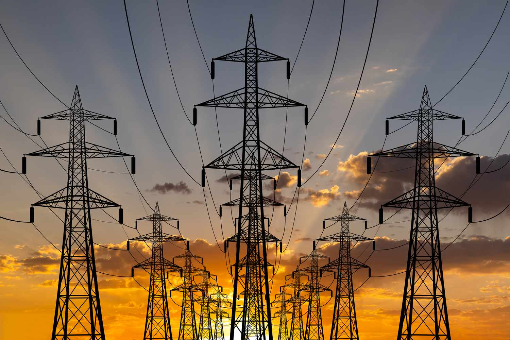

Sektor:
p _ g _ i m _ _ a
PAGMIMINA
Pagkuha at pagproseso ng mga yamang mineral (metal, di-metal, o enerhiya) upang gawing tapos na produkto o kabahagi ng yaring kalakal. Ang produkto, hilaw man o naproseso, ay nagbibigay kita para sa bansa.
Pagkuha at pagproseso ng mga yamang mineral (metal, di-metal, o enerhiya) upang gawing tapos na produkto o kabahagi ng yaring kalakal. Ang produkto, hilaw man o naproseso, ay nagbibigay kita para sa bansa.
Sektor:
p _ g m a _ _ n _ p _ k t _ r a
PAGMAMANUPAKTURA
Paggawa ng mga produkto sa pamamagitan ng manual labor o ng mga makina. Nagkakaroon ng pisikal o kemikal na transpormasyon ang mga materyal o bahagi nito sa pagbuo ng mga bagong produkto.
Paggawa ng mga produkto sa pamamagitan ng manual labor o ng mga makina. Nagkakaroon ng pisikal o kemikal na transpormasyon ang mga materyal o bahagi nito sa pagbuo ng mga bagong produkto.

Sektor:
k _ n s _ _ u _ s y _ n
KONSTRUKSYON
Pagtatayo ng mga gusali, estruktura, at iba pang land improvements.
Pagtatayo ng mga gusali, estruktura, at iba pang land improvements.

Sektor:
U _ i _ _ t _ e s
UTILITIES
Pagtugon sa mga pangunahing pangangailangan ng mamamayan tulad ng tubig, kuryente, at gas. Paglalatag ng mga imprastraktura at angkop na teknolohiya upang maihatid ang serbisyo.
Pagtugon sa mga pangunahing pangangailangan ng mamamayan tulad ng tubig, kuryente, at gas. Paglalatag ng mga imprastraktura at angkop na teknolohiya upang maihatid ang serbisyo.
MGA PATAKARANG PANG-EKONOMIYA
LAW 1
Filipino First Policy — Programang Filipino Muna ni Carlos P. Garcia upang mas mapalaki ang partisipasyon ng Pilipino sa ekonomiya.
LAW 2
Oil Deregulation Law (RA 8479) — Nagbukas ng kompetisyon sa industriya ng langis.
LAW 3
Microfinancing — Mababang interes na pautang ng mga bangko sa mahihirap na pamilya.
LAW 4
Online Business Policy — Online shopping, intermediary services, advertisements, at auctions.
LAW 5
Retail Nationalization Act (RA 1180) — Pilipino lamang ang maaaring magmay-ari ng retail trade.
LAW 6
Retail Trade Liberalization Act (RA 8762) — Binuksan ang retail trade sa mga dayuhan.
LAW 7
Build-Operate-Transfer Law (RA 6957) — Pinapayagan ang pribadong sektor na magtayo at magpatakbo ng mga pasilidad.
LAW 8
Asset Privatization Trust — Pagbebenta ng mga korporasyong pagmamay-ari ng pamahalaan sa pribadong sektor.
KAHALAGAHAN NG SEKTOR NG INDUSTRIYA
CLICK TO REVEAL
• Tumatanggap ng produkto mula sa agrikultura
• Nagkakaloob ng hanapbuhay
• Nagpapasok ng dolyar sa bansa
• Gumagamit ng makabagong teknolohiya
• Gumagawa ng intermediate products
• Nagkakaloob ng hanapbuhay
• Nagpapasok ng dolyar sa bansa
• Gumagamit ng makabagong teknolohiya
• Gumagawa ng intermediate products
SULIRANIN NG INDUSTRIYA
CLICK TO REVEAL
• Pondo at kompetisyon
• Paghina ng lokal na industriya
• Demand
• Paghina ng lokal na industriya
• Demand
SANGAY NG PAMAHALAAN
| Ahensya | Tungkulin |
|---|---|
| DTI | Nangangalaga sa industriya at pangangalakal. |
| BOI | Tumutulong sa mga bagong industriya at dayuhang mamumuhunan. |
| PEZA | Tumutulong sa paghahanap ng lugar para sa negosyo. |
| SEC | Nagrerehistro ng mga kompanya sa bansa. |